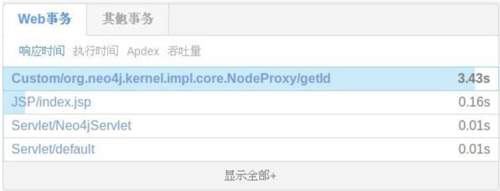

OneAPM拓展功能使用
如何对不支持的同步框架做扩展配置
Extension 可以针对 Java Agent 不支持的同步框架做扩展配置。比如目前 Java Agent 不支持 neo4j，就可以使用这种方式解决。
在 oneapm.jar 同级目录创建文件夹 extensions(注意：3.1.8及以后的探针不用自己建立，已经有了)
mkdir extensions
cd extensions //在新建的目录下面创建文件
touch neo4j.xml //创建扩展配置文件
例1：
<?xml version="1.0" encoding="UTF-8"?>
<extension
xmlns="https://blueware.com/docs/java/xsd/v1.0"
xmlns:xsi="http://www.w3.org/2001/XMLSchema-instance"
name="graphdb.extension"
version="1.8">
<instrumentation>
<pointcut>
<nameTransaction/>
<interfaceName>org.neo4j.graphdb.Node</interfaceName>
<method>
<name>*</name>
</method>
</pointcut>
</instrumentation>
</extension>
参数解释：
- name 是扩展的唯一标识，不可重复。
- version 高版本会覆盖低版本配置，如果 Java Agent 内部配有同名低版本extension，则会执行升级操作。
- Pointcut 定位有四种方式 annotationName、interfaceName、className、packageName，neo4j 的 Node 是一个 interface，所以此处配置为 interfaceName。
- method name 当前只支持通配*
配置完成后，重启 Java Agent 生效：

也可以这样配置
例2:
<?xml version="1.0" encoding="UTF-8"?>
<extension
xmlns="https://blueware.com/docs/java/xsd/v1.0"
xmlns:xsi="http://www.w3.org/2001/XMLSchema-instance"
name="org.webservice" version="1.8">
<instrumentation>
<pointcut>
<nameTransaction/>
<className>com.etc.webbookshop.service.impl.BookServiceImpl</className>
<method>
<name>*</name>
</method>
</pointcut>
<pointcut>
<nameTransaction/>
<interfaceName>com.etc.webbookshop.dao.BookDao</interfaceName>
<method>
<name>*</name>
</method>
</pointcut>
</instrumentation>
</extension>
从 BookService 到 BookDao 是一个业务，这里采用 className 和 interfaceName 的方式配置扩展，达到业务配置的目的。（备注：在这里配置扩展，不一定会在 server 端看到它们的事务，响应时间达到要求才会显示）
packageName 的配置要慎重，包下可能包含大量的 class。如果不想全部 class 都监控，可以定义模糊配置。
例3:
<?xml version="1.0" encoding="UTF-8"?>
<extension
xmlns="https://blueware.com/docs/java/xsd/v1.0"
xmlns:xsi="http://www.w3.org/2001/XMLSchema-instance"
name="org.webservice" version="1.8">
<instrumentation>
<pointcut>
<nameTransaction/>
<packageName>com.etc.webbookshop.service.impl.*ServiceImpl</packageName>
<method>
<name>*</name>
</method>
</pointcut>
</instrumentation>
</extension>
com.etc.webbookshop.service.impl 包下的以 ServiceImpl 结尾的 class
注意事项：
- 1、将custom的后台任务转换成web事务，在pointcut标签中增加 transactionType="web" 属性。
<?xml version="1.0" encoding="UTF-8"?> <extension xmlns="https://blueware.com/docs/java/xsd/v1.0" xmlns:xsi="http://www.w3.org/2001/XMLSchema-instance" name="org.webservice" version="1.8"> <instrumentation> <pointcut transactionType="web"> <nameTransaction/> <packageName>com.etc.webbookshop.service.impl.*ServiceImpl</packageName> <method> <name>*</name> </method> </pointcut> </instrumentation> </extension> - 2、extension功能的开启和关闭，在extension标签中增加 enabled="false" 属性可以关闭extension
<?xml version="1.0" encoding="UTF-8"?> <extension xmlns="https://blueware.com/docs/java/xsd/v1.0" xmlns:xsi="http://www.w3.org/2001/XMLSchema-instance" name="org.webservice" version="1.8" enabled="false"> <instrumentation> <pointcut> <nameTransaction/> <packageName>com.etc.webbookshop.service.impl.*ServiceImpl</packageName> <method> <name>*</name> </method> </pointcut> </instrumentation> </extension> - 3、改变生成的metric type，在instrumentation中增加 metricPrefix="Customes" 属性
<?xml version="1.0" encoding="UTF-8"?> <extension xmlns="https://blueware.com/docs/java/xsd/v1.0" xmlns:xsi="http://www.w3.org/2001/XMLSchema-instance" name="org.webservice" version="1.8"> <instrumentation metricPrefix="Customes"> <pointcut> <nameTransaction/> <packageName>com.etc.webbookshop.service.impl.*ServiceImpl</packageName> <method> <name>*</name> </method> </pointcut> </instrumentation> </extension> - 4、增加确定的方法，对method使用确定的方法和返回类型，目前只能在className中使用。
<?xml version="1.0" encoding="UTF-8"?> <extension xmlns="https://blueware.com/docs/java/xsd/v1.0" xmlns:xsi="http://www.w3.org/2001/XMLSchema-instance" name="org.webservice" version="1.8"> <instrumentation> <pointcut> <nameTransaction/> <className>com.etc.webbookshop.service.impl.UserServiceImpl</className> <method> <name>getAllUser</name> <parameters> <type>java.util.List</type> </parameters> </method> </pointcut> </instrumentation> </extension> - 5、非常重要的一点，在后台任务中配置extension，如果上下文中没有transaction或有异步调用会导致有些数据抓取不到，在pointcut标签中增加 transactionStartPoint="true" 属性。
<?xml version="1.0" encoding="UTF-8"?> <extension xmlns="https://blueware.com/docs/java/xsd/v1.0" xmlns:xsi="http://www.w3.org/2001/XMLSchema-instance" name="org.webservice" version="1.8"> <instrumentation> <pointcut transactionStartPoint="true"> <nameTransaction/> <className>com.etc.webbookshop.service.impl.UserServiceImpl</className> <method> <name>getAllUser</name> <parameters> <type>java.util.List</type> </parameters> </method> </pointcut> </instrumentation> </extension>
extension 功能帮助：
- 只有 packageName 可以使用 *，使用规范，使用类名路径的一部分前缀或一部分前缀+ * +后缀
使用时配置文件如果没有报错，说明 extension 的配置就成功了。配置文件报错会在 Agent 启动最开始打印在 oneapm.log 中。
排错方法：
- 如果以上都通过了，server 端没有收到配置的数据，检查匹配是否填写正确，配置的类是否会被调用，是否异步调用。
以上方法都用了，可以找研发协助。